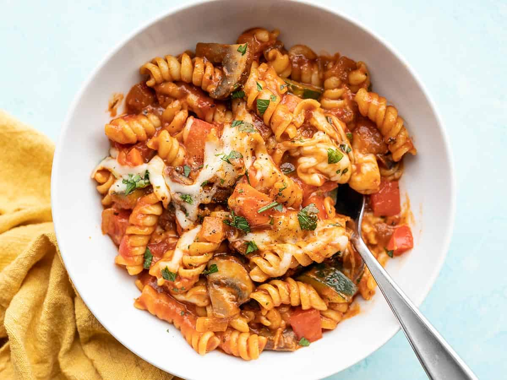

Eli's Pasta Recipe

About Eli's Delicious Pasta Recipe
This pasta recipe is the ideal recipe for any pasta lovers who may find themselves in a scenario where you and the significant other are tired of going out to eat
or maybe one of you guys simply don't know what you want to eat. If any of these situations apply to you the This pasta recipe is defiently the one you need to try.
Note that this recipe is only a starter and is the recipe that we designed for all people to enjoy, but we do know that tastebuds
vary and no one or couple are the same, so feel free to be creative and add your own spice or flavor to the mix.
Ingredients
- 2 cloves of garlic
- 1 yellow onion
- 2 carrots
- 2 Tbsp olive oil
- 8 oz. mushrooms
- 1 zucchini
- 1 red bell pepper
- ½ lb. rotini (not cooked)
- ½ tsp dried basil
- ½ tsp dried oregano
- 2 cups vegetable broth
- 24 oz. pasta sauce
- 4 oz. mozzarella, shredded (This is optional)
Steps
- Mince the garlic, dice the onion, and slice the carrots. Add the garlic, onion, and carrots to a large pot with the olive oil. Sauté over medium heat until the onions are soft and translucent.
- While the vegetables are sautéing, slice the mushrooms. Once sliced, add them to the pot with the other vegetables and continue sautéing.
- While the rest of the vegetables are sautéing, dice the zucchini and bell pepper.
- Once the bell pepper and zucchini are diced, add them to the pot along with the rotini, basil, oregano, and vegetable broth. Stir to combine. It's okay if the broth doesn't fully submerge the pasta.
- Place a lid on the pot, turn the heat up to medium-high, and allow the broth to come up to a boil.
- Once the broth reaches a full boil, give the pasta a quick stir, replace the lid, then turn the heat down to medium-low. Let the pasta simmer over medium-low, stirring occasionally and always replacing the lid, for about 10 minutes, or until the pasta is tender.
- Once the pasta is tender, add the pasta sauce to the pot and stir to combine. Top with the shredded cheese then place the lid back on the pot. Let the pasta heat for a few minutes, or just until the cheese is melted. Serve hot!
Equipment suggestions
- Dutch Oven
- Garlic Press
- Chef's Knife